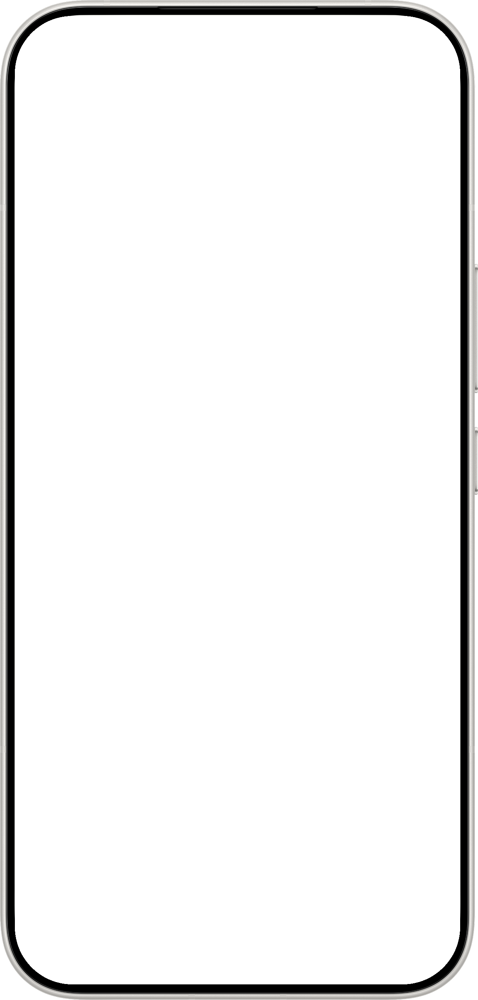
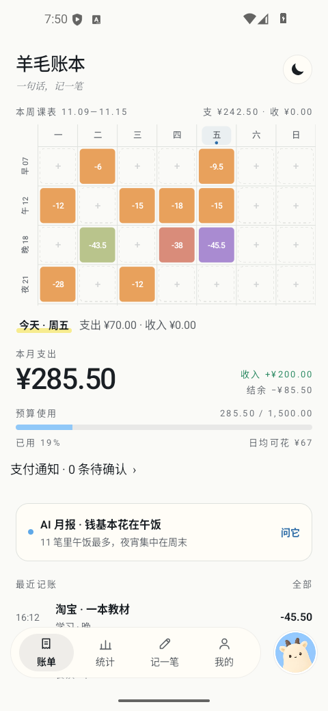

记账，也可以很轻松
一顿午饭，一次通勤。随手记下，回看时都有迹可循。
一顿午饭，一次通勤。随手记下，回看时都有迹可循。
原生应用，Android 7.0 及以上可用。打开就能记，无需注册账号。
账目保存在本机。支持 CSV 导入导出，方便自己备份。
输入一句话，提取金额、分类和日期；也可以逐项手动填写。
用标点分开几笔消费，整理日常小账不必反复打开录入页。
安装语音模型后，可在设备上完成语音识别。在线 AI 解析另行配置。
一周七天、早午晚夜四个时段，把零散账目放回生活的时间线。
点击格子查看明细，长按拖拽调整日期与时段。
本月支出、预算使用和日均可花放在一起，量入为出更直观。
每日支出、分类占比、时段分布，换一个角度理解开销。
从统计进入账目明细，把总额和每一笔消费对应起来。
自定义账期起始日与月度预算，让统计跟上自己的生活节奏。
2.0 的蓝羊羊支持按日期、分类、备注查账，也能整理多笔记录。
新增、修改、删除和预算调整先给预览，确认后执行，并支持撤销。
授权后解析支付通知；缺失信息、退款转账及疑似重复进入待确认。覆盖取决于通知内容。
用日、周、月消费总结，把分类明细与预算使用排得清清楚楚。
可接入自己选择的兼容 AI 接口，生成消费总结。服务费用由提供商决定。
用 CSV 导入导出保存账目，换一种方式整理，也留一份自己的备份。
适用于 Android 7.0 及以上。APK 约 148 MB，内含离线语音所需资源。
项目使用 MIT 许可。功能说明、使用方法和更新记录均可在 GitHub 查阅。
日常账目保存在本机。在线 AI 需另行配置并发送相关内容到所选服务商；系统备份取决于设备设置。


应用实录 · 2.0.1 本地构建 · 演示账本